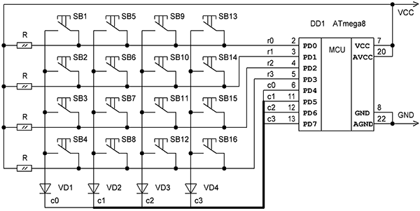

Зачастую свободных выводов микроконтроллера не хватает для подключения необходимого количества кнопок. При непосредственном соединении для n кнопок надо выделить столько же линий ввода-вывода, что не всегда возможно.
Для более рационального использования линий портов можно воспользоваться матричной схемой подключения на рис.1. В данном случае матрица, подключённая к порту D, имеет размер 4*4=16 кнопок (4 строки r0…r3 и 4 столбца с0…с3). Линии PD0…PD3, являющиеся строками r0…r3, всегда настроены на ввод, и подтянуты к шине питания резисторами R (типичный номинал 4,7…10 кОм). С них и производится считывание состояния кнопок SB1-SB16. На линиях PD4…PD7 (столбцы с0…с3) поочерёдно формируется сигнал логического нуля.
Первоначально низкий уровень устанавливается на столбце с0, а на всех остальных столбцах при этом Z-состояние. Теперь только при нажатии кнопок этого столбца (SB1…SB4) на линиях строк r0…r3 может возникнуть низкий логический уровень. Далее логический 0 выставляется на столбце с1 и сканируются группа кнопок SB5…SB8 и т.д. Точно такой же алгоритм опроса кнопок применяется и для любой другой матричной клавиатуры не зависимо от числа строк и столбцов. В общем случае количество кнопок n является произведением числа строк и столбцов. Так, например, матрица 2*2 (4 линии) будет содержать 4 кнопки. Но с другой стороны столько же линий ввода-вывода понадобится и для непосредственного подключения того же числа кнопок. Таким образом, экономия выводов начинает проявляться при числе кнопок, превышающем 4…6, и становится ещё более существенной с ростом их количества.

Рис.1 Матричная схема подключения кнопок
Элементы VD1…VD4, и R1…R4 не являются обязательными на схеме. Диоды служат для защиты от короткого замыкания между линиями строк и столбцов. Если, например, при нажатии на кнопку SB1 (в момент сканирования столбца c0) линия строки r0 вдруг окажется настроенной на вывод и на ней будет высокий логический уровень, то по цепи c0r0 начнет протекать недопустимо большой ток. Хотя логика программы не допускает такого режима работы, по разным причинам это все-таки может произойти. Поэтому, по крайней мере, при отладке программы диоды не будут лишними. Если емкость монтажа, приведенная к выводам PD3…PD0, не слишком велика, то сопротивления подтяжки к шине питания, вполне можно заменить внутренними “pull-up” резисторами. Для этого необходимо установить соответствующие разряды в регистре PORTD, когда линии настроены на ввод.
Пример подпрограммы сканирования матричной клавиатуры
|
1 2 3 4 5 6 7 8 9 10 11 12 13 14 15 16 17 18 19 20 21 22 23 24 25 26 27 28 29 30 31 32 33 34 35 36 37 38 39 40 41 42 43 44 45 46 47 48 49 50 51 52 53 54 55 56 57 58 59 60 61 62 63 |
.def button = R16 ;регистр с кодом нажатой кнопки .def temp = R17 ;регистр для промежуточных операций
ldi temp,high(RAMEND) ;инициализация стека out SPH,temp ldi temp,low(RAMEND) out SPL,temp . clr temp ;настраиваем линии порта D на ввод out DDRD,temp ldi temp, (1 << PD0)|(1 << PD1)|(1 << PD2)|(1 << PD3) out PORTD,temp . rcall btn_pol .
; Подпрограмма опроса матричной клавиатуры ; R16 – номер нажатой кнопки на выходе из подпрограммы, ; если ни одна кнопка не нажата, то R16=0; ; если нажаты две и более кнопок, то R16=0xFF ; R17 – регистр для определения номера строки ; R18 – регистр для задания номера столбца ; R19 – счётчик столбцов ; R20 – регистр для промежуточных операций
btn_pol: clr R16 ;обнуляем регистры с кодом нажатой clr R19 ;кнопки и номером столбца ldi R18,0x0F ;очищаем регистр данных PORTD порта D out PORTD,R18 ldi R18,0x00010000 bp1: out DDRD,R18 ;настраиваем на вывод линию соответствующего nop ;столбца через регистр DDRD порта D in R17,PIND ;считываем состояние строк из регистра PIND com R17 andi R17,0x0F ;выделяем значение 4-х строк ldi R20,0 ;если ни одна кнопка в столбце не нажата, breq bp5 ;перемещаемся на следующий столбец cpi R17,0x01 ;если нажата кнопка в строке c0, ldi R20,1 ;то вычисляем её номер breq bp2 cpi R17,0x02 ;если нажата кнопка в строке c1, ldi R20,2 ;то вычисляем её номер breq bp2 cpi R17,0x04 ;если нажата кнопка в строке c2, ldi R20,3 ;то вычисляем её номер breq bp2 cpi R17,0x08 ;если нажата кнопка в строке c3, ldi R20,4 ;то вычисляем её номер brne bp3 ;если нажато более одной кнопки, завершаем опрос bp2: tst R16 ;если в предыдущих столбцах были нажаты breq bp4 bp3: ldi R16,0xFF ;кнопки, то завершаем опрос с кодом 0xFF ret bp4: push R19 ;иначе вычисляем номер кнопки, как lsl R19 ;N = 4*column + row + 1 = 4*R19 + R20 + 1 lsl R19 add R20,R19 mov R16,R20 pop R19 bp5: inc R19 lsl R18 cpi R19,4 ;повторяем цикл опроса пока не будут brne bp1 ;опрошены все 4 столбца ret |
При всех преимуществах матричная схема подключения обладает и одним недостатком. С её помощью тяжело реализовать чтение комбинаций кнопок. В случае, когда на такой клавиатуре будут нажаты любые три кнопки, образующие между собой прямой угол (например, SB1,SB2,SB5), то программой опроса будет зафиксировано ложное нажатие кнопки, лежащей в свободном углу прямоугольника (в данном случае SB6). При определённом раскладе такой “фантомной” кнопкой может оказаться любая кнопка на клавиатуре.